2022 Recap and Reflections
The year is almost over, and Christmas is near! Here’s a highlight reel of everything I did this year, some reflections on how I fared in my life’s ‘categories’, and some miscellaneous thoughts going forward into 2023.
This year was incredible in many ways, and disappointing in others. I learned more about myself and travelled more than I ever did before. Personally, there was a lot of progress, yet a lot left on the table.
The sheer volume of things I want to do is so high — and I’m learning to let that be exciting rather than disappointing.
Recap
Month-by-month highlights featuring what I did, where I went, and memorable moments.
January 🏠
- Moved into my new apartment
- Saw Hasan Minhaj in Sacramento
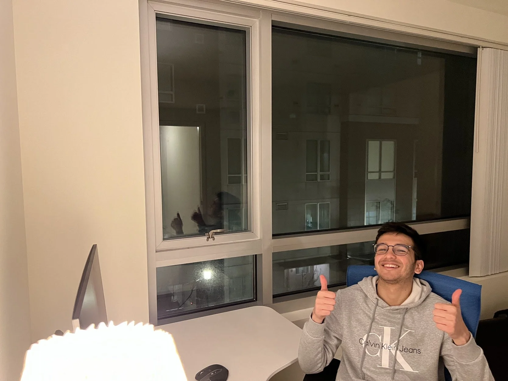
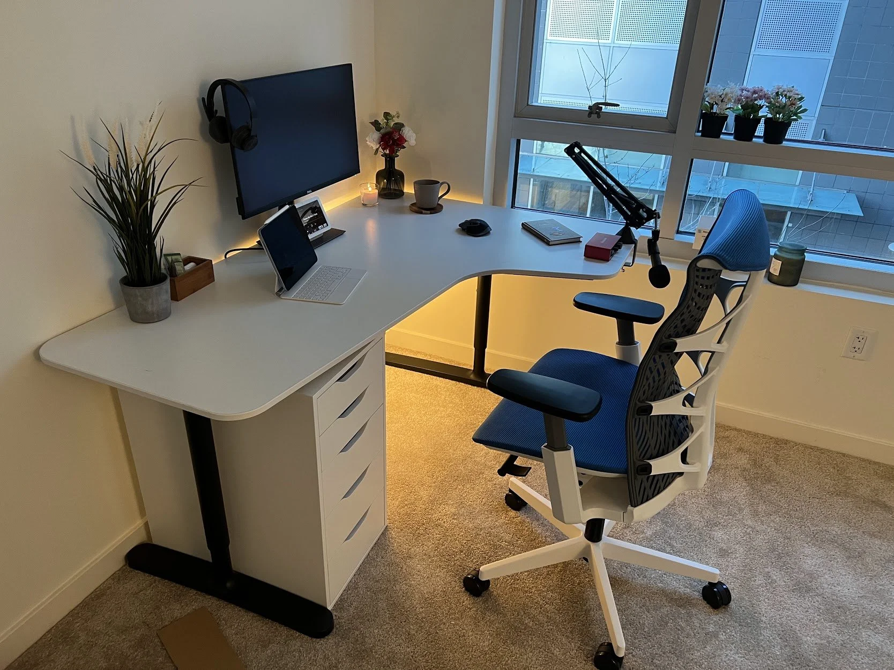
February 🎙🍷
- Launched Frndship Time Season 2
- Went wine tasting in Napa
- Went to Joshua Tree
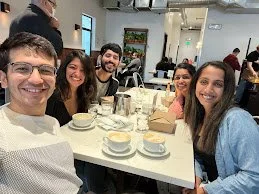
March 🎸
- Saw John Mayer!
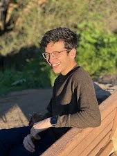
April ☕️
- Got my espresso machine. I love coffee!
- Saw Tom Segura live!
- Apple Pay-ed at a wishing fountain
- Got a Stream Deck
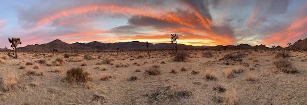
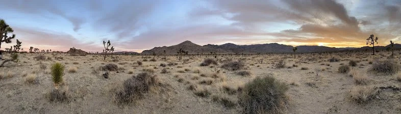
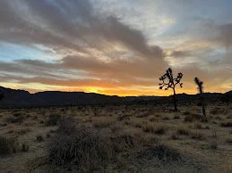
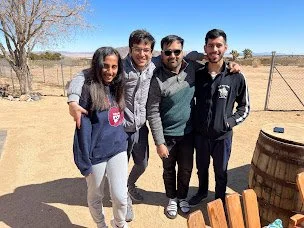
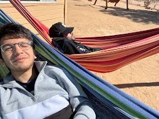
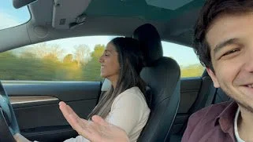
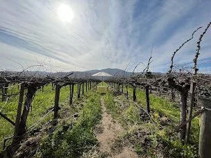
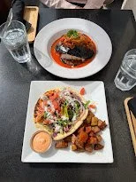
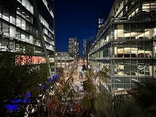
May 🏌️♂️
- Top Golf + good coffee!
- Got a Nintendo Switch, played Mario Odyssey
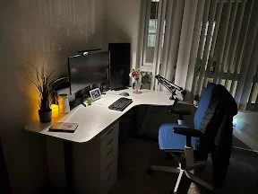
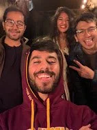
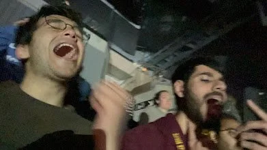
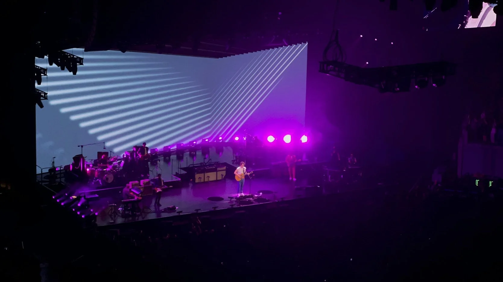
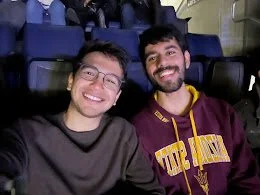
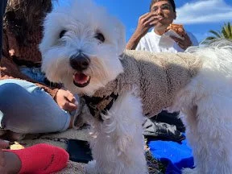
June ☀️
- San Diego summer trip
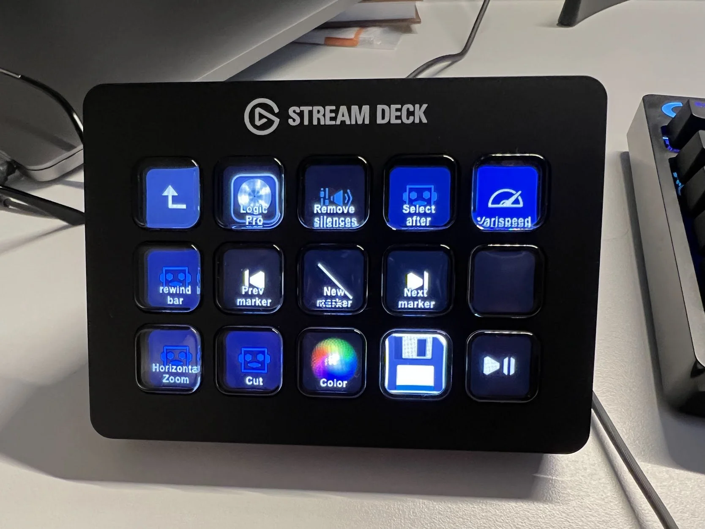
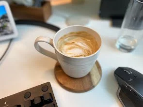
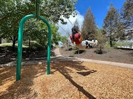
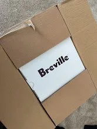
July ⚾️
- Finished playing Hollow Knight
- Saw my first ever baseball game
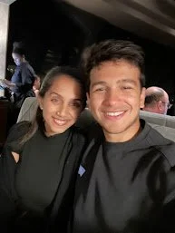
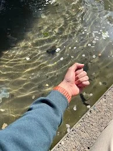
August 💼
- First ever business trip - spent 2 weeks in Boston
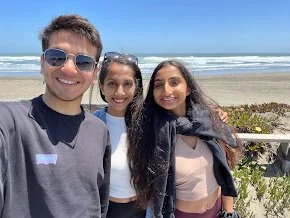
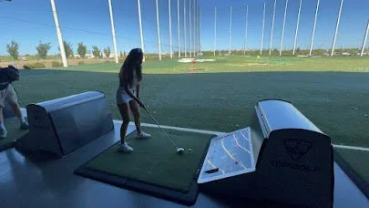
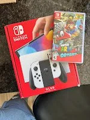
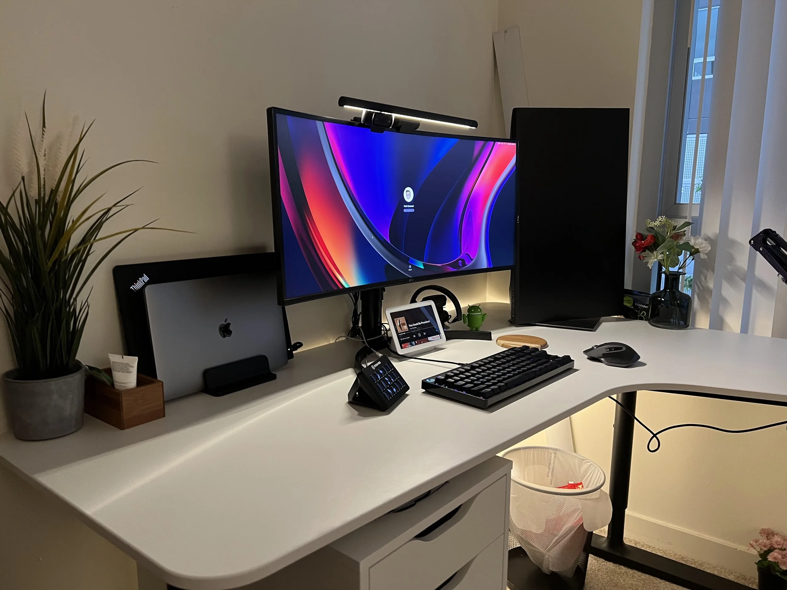
September 🏙
- Week-long Chicago trip
- Visited the biggest Starbucks Reserve in the world
- Built my custom keyboard
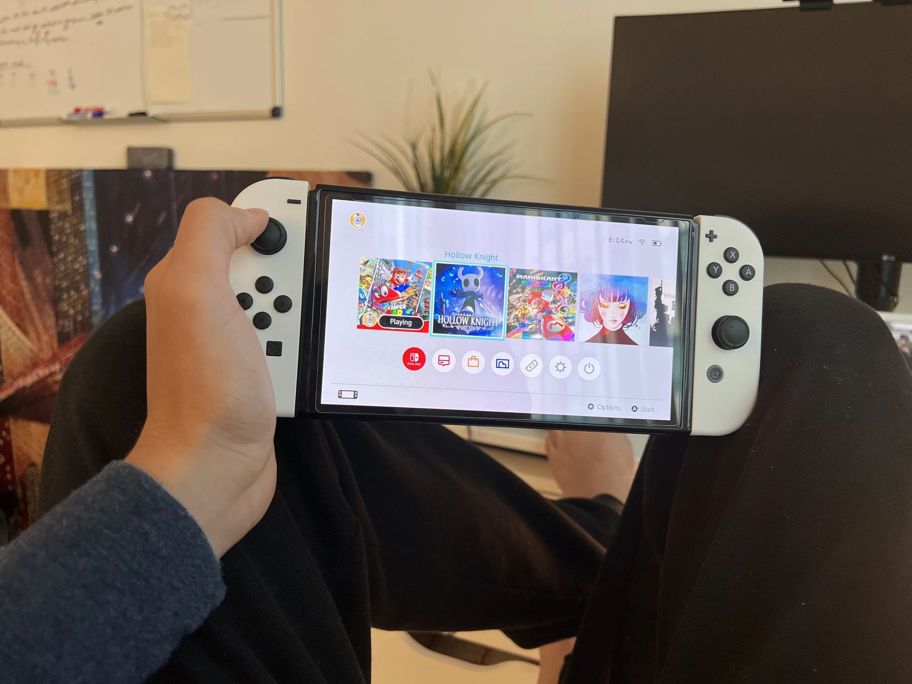
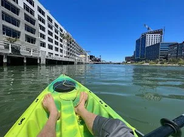
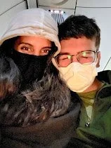
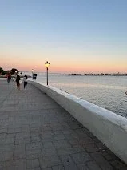
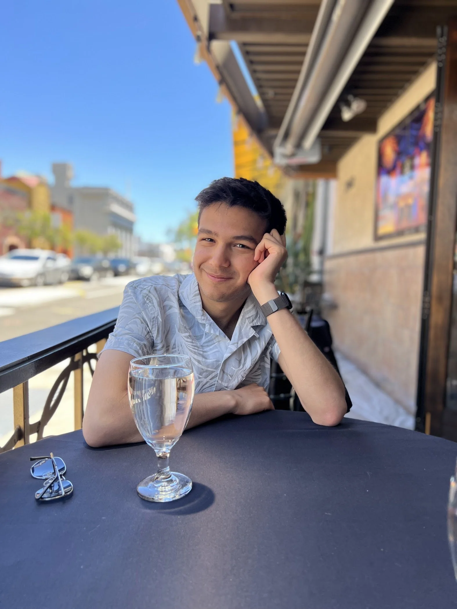
October 🏔 🪔 👻
- Parents visited from India
- Went to Yosemite and Tahoe
- Grilled all the food for a big party
- Diwali!
- Halloween parties
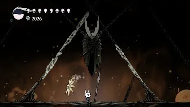
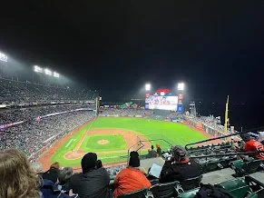
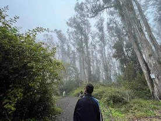
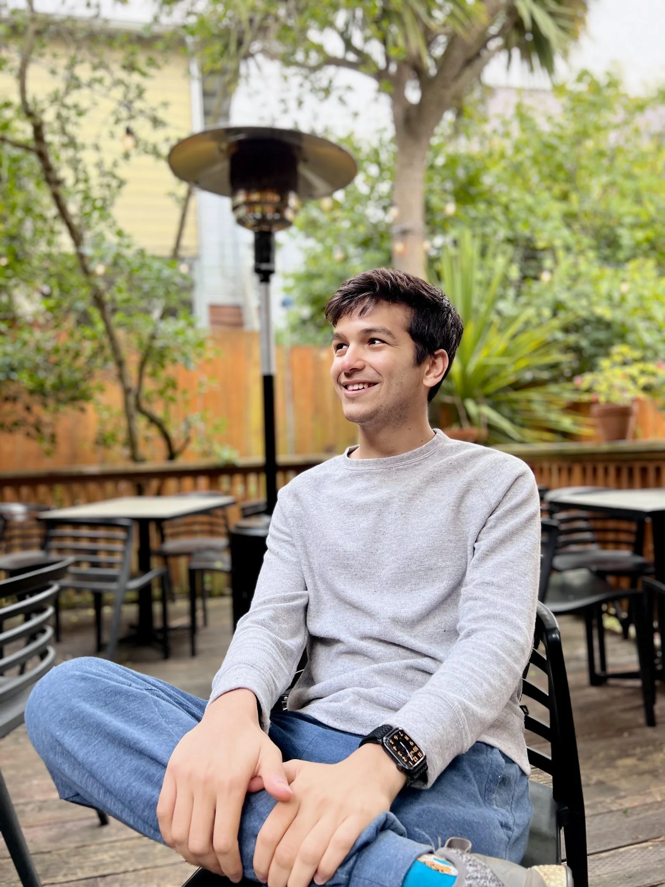
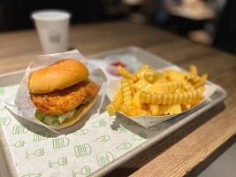
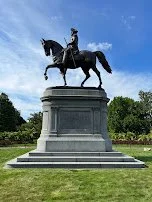
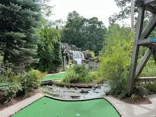
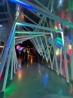
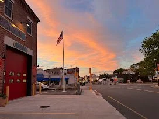
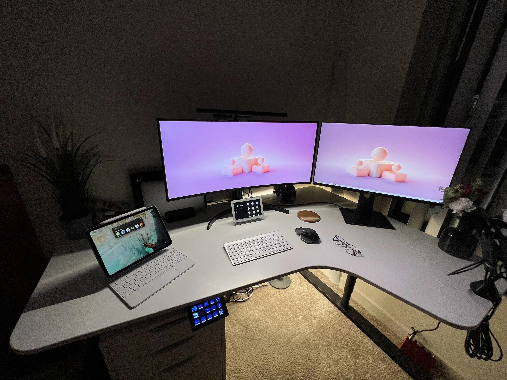
November
- Went to a candlelight Taylor Swift string concert
- Finished Hades
- Friendsgiving
- Wrapped up Season 2 of Frndship Time
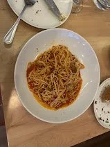
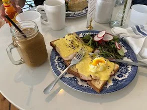
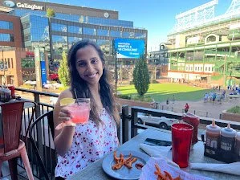
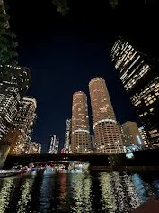
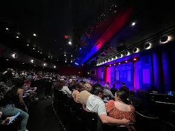
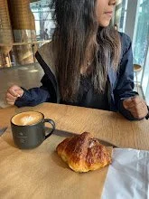
December
- Trip to LA
- Happy birthday Parth!
- WORLD CUP 2022!
- Christmas celebrations
- Got my driving permit
- Friends visited SF

Reflections
For each ‘role’ in my life, what was the plan for the year? What actually happened? What went right and what went wrong?
Podcast Cohost 🎙
What was the plan?
- Do better episodes, focus on community, make weekly episodes
What happened?
- Made weekly episodes.
- They were higher quality, but could have been even more had I put in more effort.
- Laziness held me back from really having a smash hit S2.
- Nevertheless, had a good S2!
What went right?
- Weekly episodes, higher quality in general
- Still just as fun, not a chore
What went wrong?
- Did not foresee how much work high-production episodes and guest eps can be, I was not committed enough to see them all the way through.
- For some reason expected the entire year to be uniformly busy. This was not the case, some months were much busier, so we should have gathered our rosebuds while we could.
Ratik and I talked about our year in podcasting on the season’s finale.
Health 🏃🏻♂️
What was the plan?
Stronger habits, consistent eating well and physique improvements
What happened?
Very on-off in the gym. Not great with nutrition. When things were good they were good, but big issues getting back in the habit after taking a break.
What went right?
- When things were consistent, everything felt good
- Learnt that mornings are great for workouts with my schedule
- Started stretching routines mid-year and got in some stretching everyday consistently
What went wrong?
- Not getting back to the gym after breaks.
- Not tracking meals, weight, lacking consistency.
- Nutrition was the toughest, would succumb to laziness and skip meals/eat out whenever I wasn’t prepped enough
Website ✍🏻
What was the plan?
- Write blog posts consistently
- Play with paywalls, memberships, etc.
What happened?
- Upgraded to new website design
- Wrote 0 (ZERO!) personal blog posts
- Started a Technical Blog. Wrote once and enjoyed it.
- Realized personal blog is more of a ‘fun’ project where I do not want to chase a ‘target number’ for posts. I still do enjoy it and want to do it.
- Realized I’m not obsessed enough with writing posts even though I enjoy it, mainly because all my time gets sipped up by other things (I watch too much YouTube, and would like my attention back)
What went right?
- Spending the time and effort required to porting into a new website
- Tech blog kick off
- Public Journal format and posts
What went wrong?
- Great plans for Tech Blog were not followed through
- Tech blog works closely and has big effect on career learning. Not doing it is bad - didn’t do it because sinking time into YouTube
Finances 💸
What was the plan?
- Increase income from main source of income
- Know your expenditure power - exact budget and planned expenditures
- Grow the money you already have
- More income sources
What happened?
- Did increase income
- Set up recurring investments
- Got a credit card and started building credit
- Got Mint, Copilot, set up budgets, did not monitor or follow
- Did not look into expanding portfolio - just ‘set it and forgot it’. Just did some really laid back saving
- Realized there is much to learn. It is an ongoing process, and I need to stop thinking of person finance as a project that can be finished or solved. The nature of this work is ongoing.
What went right?
- Setting up first steps (credit card, recurring investments, Copilot for budgeting)
What went wrong?
- Treated things like a project, not as simply doing this because it’s good for me
- Did not follow through after the bare minimum
- Lack of effort. No plans/brainstorming/any effort towards additional income streams
Relationships ❣️
What was the plan?
No goals, but wanted to be better about keeping in touch. Show more appreciation to the people I love.
What happened?
- I wasn’t great about this throughout the year, but coming towards the end, I put in a lot more effort into calling old friends regularly and checking up on other friends
- I feel good about this towards the end of the year
- Even if I wasn’t thrilled in the beginning, the end is really promising and something I want to carry forward into next year
What went right?
- Having constant reminders to talk to people, reaching out over text and recurring phone call reminders
Miscellaneous thoughts
What worked day-to-day
Being in SF 🌆
I loved being in a city where I could go outdoors, explore food and activities, and meet interesting people. There is a lot to do here on any given weekend, and the weather makes it possible to do it throughout the year.
Having a ‘year theme’ 🥳
In 2021, I realized I was doing too much, and none of it particularly well. For 2022, I decided to narrow down my focus. Podcasting, career thinking, friends and relationships would be front-of-mind, and the website, music, etc would be on the back seat. The desired effect did happen - I poured in a lot of work into the podcast and my career, and at the end of the year I feel much more satisfied with how those went as compared to everything I (willingly) neglected.
Day theming 📅
Deciding in advance what ‘part of my life’ I would be spending the free time of my days on was brilliant. There is less need of planning, and everything important gets attention through the week.
Pouring time into friends 👯♀️
I was more ‘present focused’ this year. Given the choice between a night with friends or working on my side projects, I always chose the social event. Looking back, I am glad I did this - I now have a circle of friends in the city with whom to do things, and with whom to learn and grow.
What was bad day-to-day
YouTube & Procrastination 📺
I watch a LOT of YouTube and procrastinate on Reddit more than I’d like to admit. It’s… a problem.
From watching meaningless content and procrastinating to taking away time from the things I really want to do, this habit is the #1 culprit behind all the potential I left on the table in 2022.
Lack of Effort 💤
There is so much I want to do. The possibilities are endless, and if I wanted, I could fill up my entire life with meaningful things that I want to do. Alas, I’m lazy and procrastinate too much. This meant not enough effort went into doing important things.
Closing Thoughts
In 2022, there was forward progress, but so much left on the table. This is because of no other reason except procrastination.
As for trips and ‘living in the present’, this year was incredible. 5-6 trips, lots of parties, events, and on a social level, one of the best years of my life.
There is so much I want to do and the possibility of so much that excites me. There is no way I can incorporate all of it into my life, but the good feeling is that I can never run out of things I want to do.
Onto 2023!